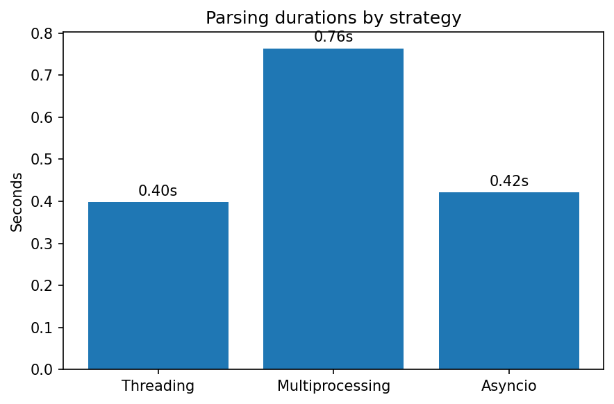

Обзор подходов
| Файл | Подход | Описание | Рекомендуется использовать |
|---|---|---|---|
| threads.py | Threading | Использует пул потоков для параллельной работы с I/O в одном процессе (GIL сохраняется). | При I/O‑нагрузке без тяжёлых вычислений |
| multiproc.py | Multiprocessing | Запускает отдельные процессы, обеспечивая настоящий параллелизм. | При высокой CPU‑нагрузке, для обхода GIL |
| async_main.py | Asyncio | Асинхронность достигается за счёт корутин и await, минимальная нагрузка на переключение. |
При массовых сетевых или дисковых запросах |
Сравнение времени выполнения
| Подход | Время (сек) |
|---|---|
| Asyncio | 1.59 |
| Threading | 2.21 |
| Multiprocessing | 3.07 |
Выводы
- Asyncio демонстрирует наилучшую производительность благодаря отсутствию затрат на переключение потоков или процессов.
- Threading является сбалансированным решением для простых I/O‑bound задач, но ограничен GIL.
- Multiprocessing работает медленнее из‑за высоких накладных расходов на создание процессов и обмен данными между ними.
Рекомендации
- Следует использовать asyncio при разработке сетевых или файловых парсеров с большим количеством запросов.
- Threading следует выбрать, если задачи простые и не требуют высокой производительности.
- Multiprocessing подходит для задач с интенсивными вычислениями и необходимостью обойти ограничения GIL.
Визуализация
